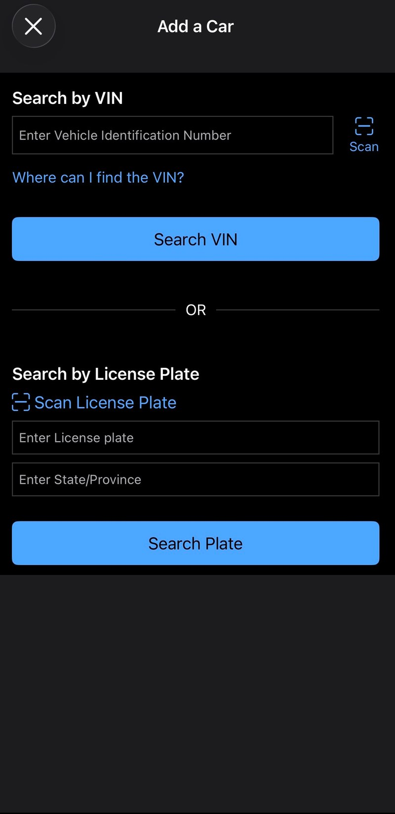
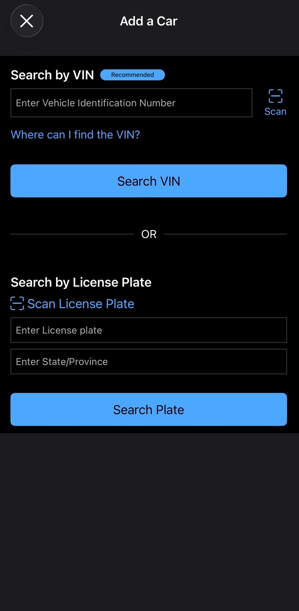
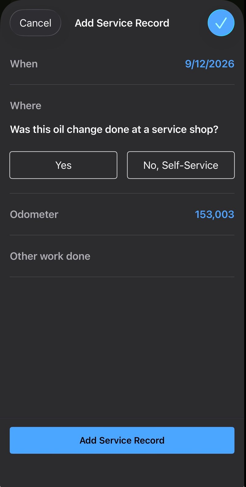
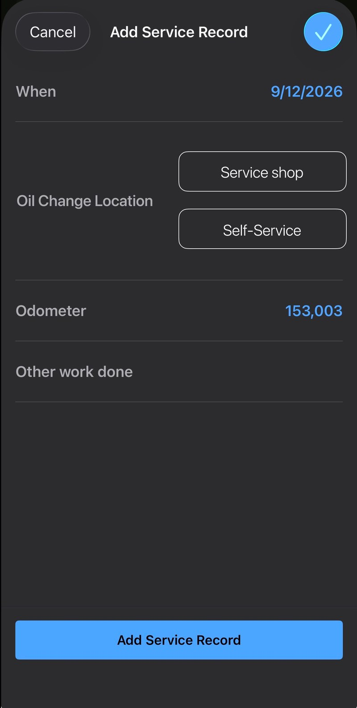
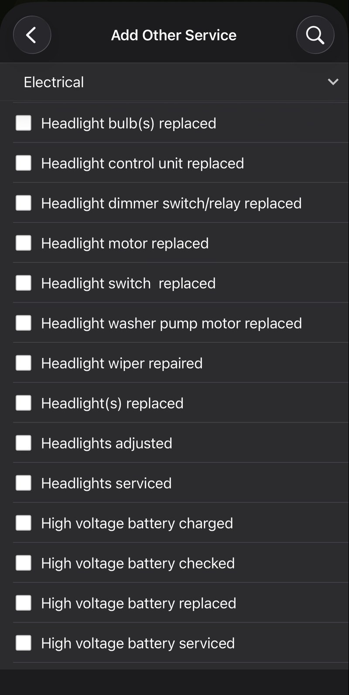
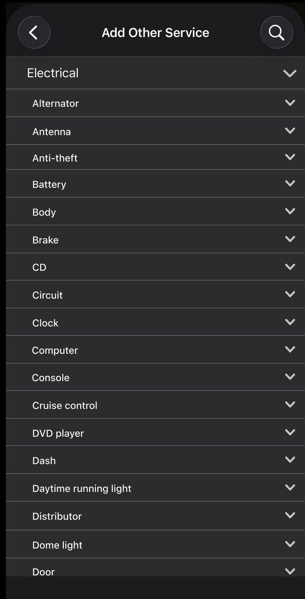

The problem & approach
Carfax's Car Care iOS app lets users track and log their vehicle's service history. The task I evaluated: logging a completed oil change, a routine workflow that walks users through adding a vehicle, confirming details, selecting a service category, entering service specifics, and saving the record.
I applied two complementary HF/UX methods: a Hierarchical Task Analysis (HTA) to map the full task structure and surface friction points at the step level, followed by a heuristic evaluation against Nielsen's 10 usability heuristics to identify the design principles being violated. The two methods were then cross-referenced in a synthesis to determine whether issues were structural or incidental.
Hierarchical task analysis
The overall goal was decomposed into five sub-goals, each with their own action steps. The HTA revealed three risk points where the design creates ambiguity, cognitive load, or potential for error.
Overall Goal
| Step | Risk description | Likely cause | Severity |
|---|---|---|---|
| 1.2: Enter VIN or license plate | First-time users have no guidance on which input method to choose | Neither option is labeled as preferred, though VIN is more error-resistant | Low |
| 4.2: Select oil change location | App asks "Was this done at a service shop?" and the framing assumes shop-service by default | Phrasing mismatch rather than structural flow problem | Low |
| 4.4: Select other work done | Each of 9 service dropdowns contains 100+ options, many sharing the same prefix with no subgrouping | Designers underestimated cognitive load for users unfamiliar with car terminology | Low–Medium |
Findings & redesign mockups
Three distinct usability issues were identified across the task flow, each mapped to a violated Nielsen heuristic. A Figma redesign mockup was created for each, showing the original screen alongside the proposed fix.
The "Add a Car" screen presents two input options (VIN or license plate + state) with no indication of which is preferred. First-time users must recall which method to use rather than being guided by the interface.
VIN is objectively more error-resistant and precise; the design simply doesn't communicate that.


The app asks "Was this oil change done at a service shop?" with Yes/No buttons. This framing forces users to translate a binary question into a mental model of where they actually got their oil changed, a mismatch between how the system asks and how users think.
Self-service users in particular may hesitate, unsure whether "No" correctly captures their situation.


Secondary: Recognition rather than recall (#6)
Each of the 9 "Add other service" dropdowns contains up to 100+ items presented as a flat, unsorted list. Many entries share the same prefix, requiring users unfamiliar with automotive terminology to scan the entire list.
A search bar is present but doesn't help users who don't know the exact term. This was the only issue that surfaced independently in both the HTA and heuristic evaluation, a sign it's structural rather than incidental.


Cross-referencing HTA & heuristics
Surfacing an issue in both the task analysis and the heuristic evaluation is meaningful because it suggests a structural problem embedded in the design rather than a surface-level phrasing quirk. Findings 1 and 2 appeared only in the heuristic evaluation, pointing to phrasing issues unlikely to prevent task completion. Finding 3 appeared independently in both, confirming it as the most significant issue in the flow.
What's next
This project reinforced how much two methods surface more than one alone. The HTA gave me a structured map of where cognitive load accumulates across the task flow; the heuristic evaluation gave me the vocabulary to explain why those spots fail. Cross-referencing them revealed which issues are worth fixing first.
The Figma mockups translate each recommendation into a concrete proposed change, not just a list of problems. The logical next step is a moderated usability test to validate whether the redesigns actually reduce hesitation and error at each of the three points, and whether the dropdown subgrouping is intuitive enough for users with no car knowledge to navigate.